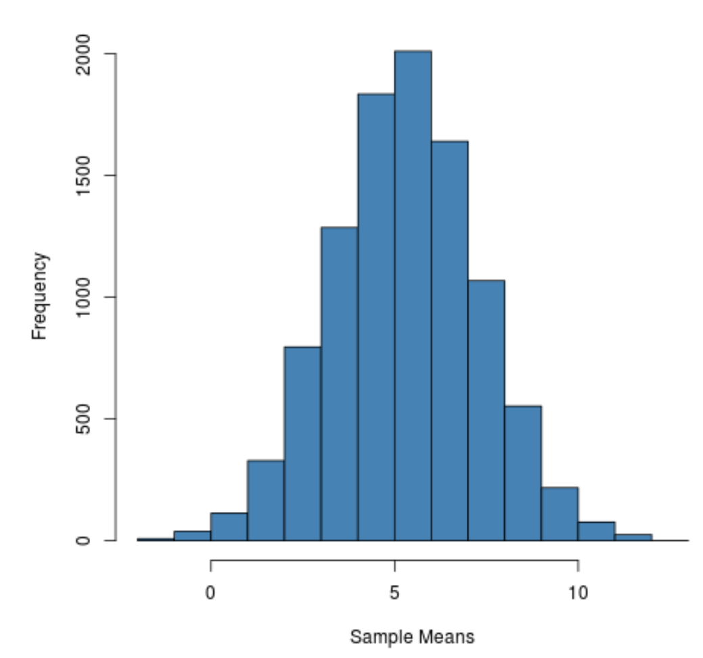

2 Statistical Inference
In this chapter, we introduce the basics of statistical inference. We start by introducing the population data generating process (DGP), and how we can model real-world scenarios. Then, we discuss how we can estimate the parameters of these real world DGPs, including the properties of estimators and hypothesis testing.
2.1 Data Generating Process
Let us say we are interested in studying some variable \(Y\) in the population. To study \(Y\), we can imagine how \(Y\) was “generated” in the population through a model of the data generating process - how we believe the real values of \(Y\) in the population came to be.
Definition 2.1 (Data Generating Process) The data generating process is the process in the real world that “generates” the values of variable \(Y\) for every individual \(t = 1, 2, \dots, n\) in the population. We can model the data generating process of each individual’s \(Y_i\) value as some function of a vector of parameters \(\b\theta\).
\[ Y_t = f(\b\theta) \]
For example, let us say we are interested in the variable height \(Y\) in the population (let us say in the UK). Let us (boldly, and for simplification) assume any individual \(t\)’s height is completely random and selected from a normal distribution. Then we can model the data generating process for any individual’s \(Y_t\) value as
\[ Y_t \sim \mathcal N(\mu_Y, \ \sigma^2_Y) \]
The parameters of this model are \(\b\theta = (\mu_Y, \sigma^2_Y)\), that determine the value of \(Y_t\). If we can find the values of \(\b\theta\), then we can explain how variable height \(Y\) works in the population.
Obviously, most variables \(Y\) in the real world are not completely random. For example, if \(Y\) is income, we might assume that another variable education \(X\) is associated with income \(Y\). In this scenario, we can model the data generating process as
\[ Y_t \sim \mathcal N( X\beta, \sigma^2_Y) \]
Where \(X\beta\) is now the expectation of the normal distribution. In this model, our parameters \(\theta\) are now \(\b\theta = (\beta, \sigma^2_Y)\). This model states that as education \(X\) increases by 1, the expected \(Y\) value changes by \(\beta\). This parameter \(\beta\), if we can estimate it, will tell us the relationship between \(X\) and \(Y\).
This model still incorporates randomness through the random normal distribution with variance \(\sigma^2_Y\) -this represents that not everyone with the same education will make the same exact income.
We can make our data generating process more complex. Perhaps, we believe that multiple variables \(X_1, X_2, \dots, X_p\) are correlated with \(Y\). We can model this as
\[ Y_t \sim \mathcal N(\beta_1X_1 + \beta_2X_2 + \dots + \beta_pX_p, \ \sigma^2_Y) \]
Where now the parameters are \(\b\theta = (\beta_1, \beta_2, \dots, \beta_p, \sigma^2_Y)\), and finding the values of these parameters will help us understand \(Y\) and its relationship with \(X_1, \dots, X_p\).
A lot of natural phenomena are normally distributed. However, we are not limited to the normal distribution: any distribution is possible. We can also change the functional form of the relationships (maybe instead of \(\beta X\), the mean is described by \(\beta X^2\)).
We choose the way we model our DGP based on what we know about \(Y\) from our own intuition and prior research. Once we have a model of the DGP, we will know that the value of \(Y_i\) depends on some parameters \(\b\theta\), for which we do not know the value of. The next step of statistics will be trying to figure out the values of \(\b\theta\).
2.2 Sampling and Estimators
Let us say we model the DGP in the population as \(Y_t = f(\b\theta)\). We know that if we can figure out the values of parameters \(\b\theta\), then we can understand how \(Y\) works in our population. The true values of \(\b\theta\) in the population is called the estimand.
Definition 2.2 (Estimand) The estimand is \(\theta\), the true population value of some parameter. This could be the true mean \(\mu_Y\), the true variance \(\sigma^2_Y\), or some true relationship \(\beta\) between two variables from the population.
However, a vector of estimands \(\b\theta\) is often not intuitive or easy to calculate. For example, let us say we are interested in people’s heights \(Y\) in the UK. For simplicity, assume a DGP of \(Y_i \sim \mathcal N(\mu_Y, \sigma^2_Y)\). We want to find \(\theta = \mu_Y\), the average height of all people in the UK. How can we do this?
Of course, we could ask all 70 million people in the UK, and find the average. But clearly that would take an enormous amount of effort and resources to ask 70 million people. In some future applications we will discuss, the population is hypothetical, so asking the whole population is not even an option with unlimited resources.
The answer to this issue is sampling. We randomly take a subset of the population (let us say 1,000 people out of the 70 million), and then calculate the sample average height \(\bar Y\).
If we believe that our sample is representative/similar to the population, then we might be able to say something about the population average height \(\mu_Y\) from our sample average \(\bar Y\). This procedure is called the estimator, and produces an estimate \(\hat\theta_n\) of our true population.
Definition 2.3 (Estimator and Estimates) The estimator is a procedure/process to turn sample data, into an estimate \(\hat\theta_n\) of our true population estimand \(\theta\). For example, taking a sample and calculating the mean \(\bar Y\) is a estimator of the true mean \(\mu_Y\).
A lot of statistics is about trying to find a good estimator in order to accurately (to the best of our ability) estimate the true population estimand \(\theta\). In the next few sections, we will explore the properties of estimators, and determine how we determine what a good estimator is.
2.3 Sampling Distributions
We have taken a sample from the population, and using an estimator, produced a sample estimate \(\hat\theta_n\). However, there is an issue with our sample estimate \(\hat\theta_n\) that we have gotten: if we took another random sample, we would get different individuals in our sample due to randomness, which would result in a slightly different sample estimate \(\hat\theta_m\).
Now, let us run a hypothetical thought experiment. We take 1 sample, and calculate our estimate \(\hat\theta_1\). We take a second sample, and calculate our estimate \(\hat\theta_2\), which is slightly different than the first. We then keep taking more and more samples (close to infinity number of samples), until we have estimates \(\hat\theta_1, \hat\theta_2, \hat\theta_3, \dots, \hat\theta_N\).
Now, we can plot our different sample estimates \(\hat\theta_1, \dots, \hat\theta_n\) on a distribution. For example, if we return back to the average height in the UK example, each sample produces a different sample average height. We can plot them as follows:

This is called a sampling distribution, and illustrates the possible estimates \(\hat\theta_n\) we could get under repeated sampling. The actual form of the distribution (expected value, variance, shape) are determined by the estimator.
Now, let us stop thinking in this hypothetical thought experiment, and return to the real world. In the real world, we are only going to take one random sample. But which sample in real-life did we get when sampling? Which \(\hat\theta_n\) is our specific sample estimate from this big distribution of potential sample estimates?
Well, we can actually think of our individual sample estimate \(\hat\theta_n\) as a random variable, whose probabilities is based on this hypothetical sampling distribution. When we actually draw a sample and calculate \(\hat\theta_n\), we are essentially randomly selecting one of \(\hat\theta_1, \hat\theta_2, \dots, \hat\theta_N\) from the sampling distribution.
This idea of our sample estimate \(\hat\theta_n\) being a random variable with a distribution defined by the sampling distribution also implies that the other properties of random variable distributions mentioned in the last chapter apply to sampling distributions. Sampling distributions have a mean, variance, and other properties that we will explore.
Since sampling distributions are determined by our estimator (and its properties), we will often interchangeably switch between the terminology of estimators and sampling distributions.
2.4 Finite Sample Properties
As we discussed above, our sample estimates \(\hat\theta_n\) are a random draw from a sampling distribution. We also mentioned that the shape, form, and parameters of the sampling distribution are a direct result of our estimator.
We know that our sampling distribution has some expectation, like any random variable. That means our estimates \(\hat\theta_n\) have some expected value. One property relating to the expectation of our estimator/sampling distribution is unbiasedness.
Definition 2.4 (Unbiased Estimator) An estimator is considered unbiased, if its estimates \(\hat\theta_n\) have an expectation that is equal to the value of the true population parameter.
\[ \E \hat\theta_n = \theta \]
Or in other words, if we repeatedly sample and use an unbiased estimator to calculate our estimates \(\hat\theta_n\), on average, the estimates will be equal to the true population value \(\theta\) of interest. In terms of the sampling distirbution, this means that the expectation (centre) of the sampling distribution is equal to the true population value \(\theta\).
We want an unbiased estimator, because if \(\E\hat\theta_n = \theta\), then we know that our “expected” value of our estimator, our best guess of the estimator’s value, is indeed, the correct true population parameter \(\theta\).
However, just like with random variables, we do not just care about the expected value of the estimator. We also care about its variance - how spread out/precise the individual estimates \(\hat\theta_n\) of an estimator are.
For example, let us say we have some true population parameter \(\theta = 0\), and two estimators \(A\) and \(B\). \(A\) produces sample estimates -1 and 1, while \(B\) produces sample estimates -100 and 100.
Both estimators are unbiased, but, clearly, estimator \(A\)’s individual sample estimates are on average, much closer to the true \(\theta = 0\). Thus, we care about the variance of the estimator.
Definition 2.5 (Variance of an Estimator) The variance of an estimator, which is also the variance of the sampling distribution, can be quantified as
\[ \V \hat\theta_n = \E[(\hat\theta_n - \E \hat\theta_n)^2] \]
In an ideal world, we want an estimator that has the least variance of any unbiased estimator. This way, we know the estimator is on average correct, and that each individual estimate \(\hat\theta_n\) the estimator produces is not very far from the true population value of \(\theta\).
An estimator that is both unbiased, and has the least variance of any unbiased estimator, is called the best or most efficient unbiased estimator.
2.5 Asymptotic Properties
In the previous section, we discussed properties that apply to estimators/sampling distributions no matter the sample size \(n\) (the size of each individual sample). That is what we call finite sample properties.
However, we also are interested in asymptotic properties (also called large sample properties). Asymptotic properties are what happens to our estimators/sampling distributions when we increase sample size towards infinity \(n \rightarrow ∞\).
One of the most important asymptotic properties are if our estimator is consistent/unbiased in asymptotic sample sizes.
Definition 2.6 (Asymptotic Consistency) An estimator is asymptotically consistent (or asymptotically unbiased), if as we increase sample size towards infinity, the estimate will become more and more concentrated around the true population value \(\theta\). At \(n=∞\), we should expect our sample distribution to “collapse”, with only one potential outcome, the actual value of \(\theta\) in the population.
\[ \P (|\hat\theta_n - \theta| > \epsilon) \rightarrow 0, \quad \mathrm{as} \ n \rightarrow ∞ \]
What the above formula essentially states is that the difference between our estimate \(\hat\theta_n\) and the actual population \(\theta\) is greater than some arbitrarily small value \(\epsilon\) with 0 probability asymptotically.
Note that an estimator can be biased in finite samples, but consistent/unbiased in asymptotic samples. This implies that as we increase our sample size, the bias of this type of estimator will decrease.
One of the principles establishing asymptotic consistency is the law of large numbers, which shows that the sample average estimator is asymptotically consistent.
Theorem 2.1 (Law of Large Numbers) The law of large numbers says that the sample average of a random sample is a asymptotically consistent estimator of the population mean. In other words, if we have a sample of \(x_1, \dots, x_n\), the sample mean \(\bar x_n\) has the property
\[ \mathrm{plim}(\bar x_n) = \mu_X \]
Where \(\mathrm{plim}\) stats that as \(n \rightarrow ∞\), the probability distribution of the sample estimator \(\bar x_n\) collapses around the true mean \(\mu_X\).
Proof: Let us restate the sample mean estimator by its formula (definition of average):
\[ \bar x_n = \frac{1}{n}\sum\limits_{t=1}^n x_t \]
Now, let us find the variance of this sample estimator \(\bar x_n\).
\[ \V \bar x_n = \V \left( \frac{1}{n}\sum\limits_{t=1}^n x_t \right) \]
Using the properties of variance in theorem 1.2, we establish that the above is
\[ \V \bar x_n= \left(\frac{1}{n}\right)^2 \V \left(\sum\limits_{t=1}^n x_t \right) \]
Let us define the variance of our sample \(x_1 \dots, x_n\) as \(\V x_t = \sigma^2\). We get
\[ \V \bar x_n = \frac{1}{n^2} n\sigma^2 = \frac{1}{n}\sigma^2 \tag{2.1}\]
And if sample size \(n \rightarrow ∞\), we have a limit:
\[ \lim\limits_{n \rightarrow ∞} \V \bar x_n = \lim\limits_{n \rightarrow ∞} \frac{1}{n}\sigma^2 = 0 \]
Thus, we can see the variance becomes 0, and the estimator’s sampling distribution collapses to a single value. This law will be used frequently in proving asymptotic properties, since many different parameters (such as variance and covariance for example) involve expectations/averages.
2.6 Central Limit Theorem
Aside from the expected value and variance of a sampling distribution, we also want to know what shape/form the sampling distribution is taking.
After all, if we can define a PDF for the sampling distribution, we can figure out the probabilities of getting certain \(\hat\theta_n\) estimates, which is a key part of hypothesis testing (shown later in the chapter).
The central limit theory provides a way for us to know the form of the sampling distribution.
Theorem 2.2 (Central Limit Theorem) Let \(Z_1, \dots, Z_n\) be independent and identically distributed random variables that when realised, produce a sample \(z_1, \dots, z_n\). Let us say the true mean \(\E Z_i = \mu_Z\), and the true variance \(\sigma^2_Z = \V Z_i\).
Consider the sample average \(\bar z_n\), and its variance \(\V \bar z_n = \sigma^2_Z/n\) (from eq. 2.1). Now, let us define a new variable \(W_n\), which is \(\bar z_n\) standardised (from eq. 1.8). The central limit theorem states that \(w_n\) is normally distributed as sample size \(n \rightarrow ∞\):
\[ W_n = \frac{\bar z_n - \mu}{\sigma_Z / \sqrt{n}} \sim \mathcal N(0, 1) \quad \mathrm{as} \ n \rightarrow ∞ \]
This property holds no matter the original distribution of \(Z_i\) or \(\bar z_n\).
The central limit theorem says that as our sample size becomes larger and larger, our sample means estimator \(\bar z_n\)’s standardised version \(W_n\) will be standardly normally distributed.
If we recall previously, the standard normal distribution has a probability density function of:
\[ \varphi(z) = f_Z(z) = \frac{1}{\sqrt{2\pi}}e^{-\frac{1}{2}z^2} \]
This means that if we have a sufficiently large sample size such that we can invoke the central limit theorem, we can calculate the exact probability of our sample estimate \(\hat\theta_n\) being the outcome of the random variable of the sampling distribution, by using the probability density function defined in definition 1.1.
This ability to calculate the probability of our realised sample estimate \(\hat\theta_n\) allows us to conduct statistical inference with hypothesis testing, which we will introduce below.
2.7 Hypothesis Testing
Science is about disproving a status-quo belief about a parameter \(\theta\), and proving a new theory. We call the status-quo belief the null hypothesis \(H_0\), and our new theory the alternate hypothesis \(H_1\).
For example, your status quo theory might be that there is no relationship between education and income \(\theta = 0\). Your alternate hypothesis is that there is a relatinoship between education and income \(\theta ≠ 0\).
How can we “disprove” the status quo theory and conclude our alternate hypothesis is correct? What we essentially do is first assume that the null hypothesis \(H_0\) is true. We then gather a sample, and create a sample estimate \(\hat\theta_n\). We then calculate the probability of getting a sample estimate \(\hat\theta_n\), assuming that the null hypothesis is true.
If the probability of getting our specific sample estimate \(\hat\theta_n\) is very low, we typically conclude that assuming the status quo theory \(H_0\) is incorrect, and our alternative hypothesis \(H_1\), our \(\hat\theta_n\) would actually be more plausible.
To run a hypothesis test of this sort, we take a series of steps. First, we define our null and alternate hypotheses:
- Null hypothesis \(H_0 : \theta = \theta_0\).
- Alternate hypothesis \(H_1 : \theta ≠ \theta_0\)
Second, we have to calculate our test statistic. The actual test statistic (t-statistic, z-statistic, wald statistic) used depends on our estimator/sampling distribution. We will specify which test statistic to use for every estimator when we introduce specific estimators. However, every test statistic is calculated in the same way:
\[ \mathrm{test \ statistic} = \frac{\hat\theta_n - \theta_0}{se(\hat\theta_n)} \]
Where \(\hat\theta_n\) is our sample estimate, \(\theta_0\) is the null hypothesis belief of the true value of \(\theta\), and \(se(\hat\theta_n)\) is the standard deviation of our sampling distribution (square root of variance). The test statistic is measuring the distance in standard errors between \(\hat\theta_n\) and \(\theta_0\).
Then, once we have a test statistic, we go to a standard normal distribution (or t-distribution or \(\chi^2\) distribution, depending on the test). We start from the expectation of this distribution, then go test-statistic-number-of-units to both sides of the expectation. We then highlight the areas further from the expectation on both sides. The figure below illustrates this with a test statistic of 2.228.

Now, we calculate the probability of the highlighted areas using the probability density function of the distribution we are using. This step is typically done with a calculator/computer since integrals are complex to compute.
The probability we get is called the p-value. The p-value describes the probability of getting a test statistic as or more extreme than the one we got, assuming the null hypothesis \(H_0: \theta = \theta_0\) is true.
If the p-value is below 0.05 (5%), we believe that it is unlikely that the null hypothesis is true, so we reject the null hypothesis \(H_0\) and conclude our alternate hypothesis \(H_1\) is true. If the p-value is above 0.05 (5%), we have no evidence to reject the null hypothesis \(H_0\), so we still remain with the status quo \(H_0\).
Note that you do not need to choose a 5% significance level - although that is the standard in many social science field and computer software.
2.8 Nonparametric Bootstrap
In theorem 2.2, we discussed how the central limit theorem allows us to know that in large sample sizes, our standardised sampling distribution will be normally distributed. However, what if we have a small sample size? After all, it is not easy to collect a large sample.
Bootstrap methods are a method to “simulate” the sampling distribution. Essentially, we start with some sample of size \(n\) with values \(z_1, \dots, z_n\). This original sample gets us some estimate \(\hat\theta_n\).
Now, to simulate a sampling distribution, what we do is to sample with replacement from our original sample \(z_1, \dots, z_n\). This will create a new bootstrap sample \(b_1\) of size \(n\).
When we sample with replacement, we allow for observations to be sampled multiple times into our bootstrap sample. For example, our new bootstrap sample might take the form \(z_1, z_2, z_2, z_2, z_3, \dots, z_n\).
Using this bootstrap sample \(b_1\), we can calculate a sample estimate \(\hat\theta_1\). Now, let us repeat the process, and create multiple bootstrap samples \(b_1, b_2, \dots, b_B\). For each, we calculate \(\hat\theta_b\), such that by the end of this process, we have \(\hat\theta_1, \hat\theta_2, \dots, \hat\theta_B\).
Now, we have basically simulated a sampling distribution. The benefit of this method is that we don’t need to rely on some fancy statistical theories like the central limit theorem to conclude the shape of our sampling distribution.
The standard error from bootstraping is:
\[ se_B(\hat\theta) = \sqrt{\frac{1}{B-1} \sum\limits_{b=1}^B (\hat\theta_b - \E \hat\theta_b}) \]
The downside of bootstrap is that it is fully reliant on our original sample being reflective of the population. If our original sample has some issues that misrepresent the population, the bootstrapped sampling distribution may be flawed.